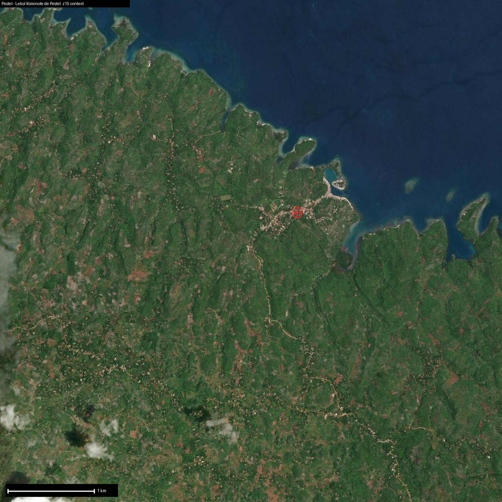

The richest topsoil and the steepest ground. A Grand'Anse hillside that wants tree crops, vetiver for erosion-and-cash, and patient money.
The richest topsoil and the highest nutrient-holding capacity we measured (SOC 6.2%, CEC 34), and the best pH at 5.9. But it sits on a 10-degree slope in a hurricane corridor, with a 287 mm single-day rainfall on record. Erosion is extreme at 77 t/ha. The land is excellent; the whole game is holding the soil on the hill with contour structures and vetiver hedges before anything else.
Vetiver leads here. It grades a perfect fit and does double duty... erosion control on the slope, and the highest-value crop in the whole network. Cacao, coffee and breadfruit follow as secondary tree crops, genuinely viable on Grand'Anse's cheap-to-ferment, blueprint-next-door model (CAUD and FECCANO prove it a few miles away) but rain-limited at 1,029 mm, so they ride behind vetiver, not ahead of it.
The high-value crops, but the high-extraction ones too: vetiver oil sells for roughly 170× what the grower gets for the grass, and raw cacao returns the farmer a third of what the same bean earns as local chocolate. Pestel owns the processing, or it stays poor. The still is phased... fast aromatics distil cheaply up north now, and Pestel's own stainless vetiver skid comes online when the roots mature at month 18 to 24.
The most expensive TapTap, and the most patient. The $14,900 stabilizes the slope and plants. The big number is a tree-crop establishment and 3-to-5-year income bridge (~$25,000) that is grant capital, not product-purchase money.
10 young people work here today, room for 20. A six-month renewable apprenticeship at $52/month base plus a surplus share, and a 40%-rising-to-51% ownership stake in the cooperative. Binding constraint: Erosion control first, then patient capital for the tree-crop years.
Your purchase of cassava flour funds this TapTap directly: the wages, the equipment, the assets that stay in the cooperative. The proof of exactly what it did ships back with the harvest.
Sponsor this TapTap